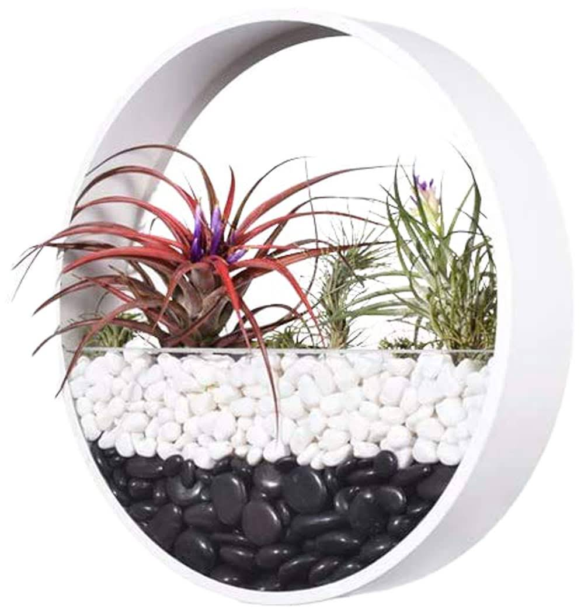

Quelques bonnes pratiques d'accessibilité
L'alt est vide donc rien ne doit être écrit
Images décoratives
Utiliser des attributs "alt" vides ou nuls afin d'éviter qu'elles soient lues par les technologies d'assistance.

couverture d'un livre sur le handicap et l'accessibilité
Images informatives
Utiliser des descriptions appropriées dans les attributs "alt" des images informatives. Pas besoin d'attributs title ou d'ARIA ici.

image de code html avec une résolution trop faible
Balises HTML sémantiques
Utiliser des balises HTML appropriées (telles que <header>, <nav>, <main>, <section>, <article>, <aside>, <footer>) pour améliorer la structure et la compréhension du contenu par les technologies d'assistance.
Comment réaliser un audit d'accessibilité sur votre site web
ARA vous propose une méthodologie pour réaliser 3 types d'audit
Rapide (25 critères du RGAA)
Complémentaire (50 critères du RGAA)
Complet dit de conformité (106 critères du RGAA)
Lien pour effectuer un audit d'un site web Lien vers une liste d'outils pour tester l'accessibilité